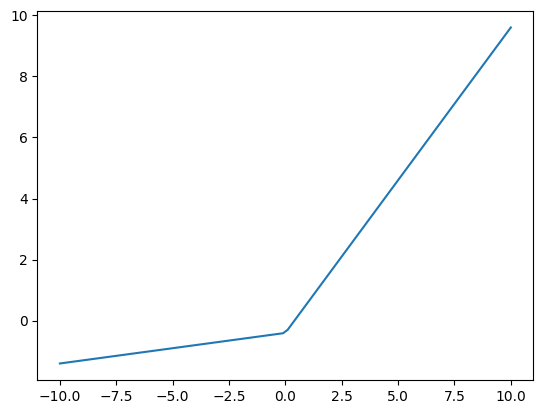
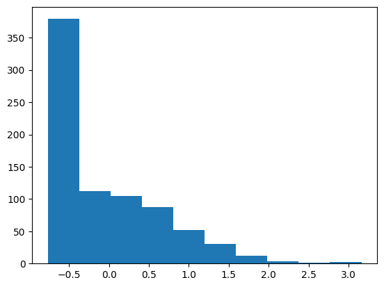
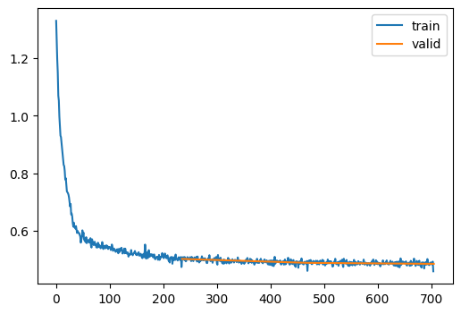
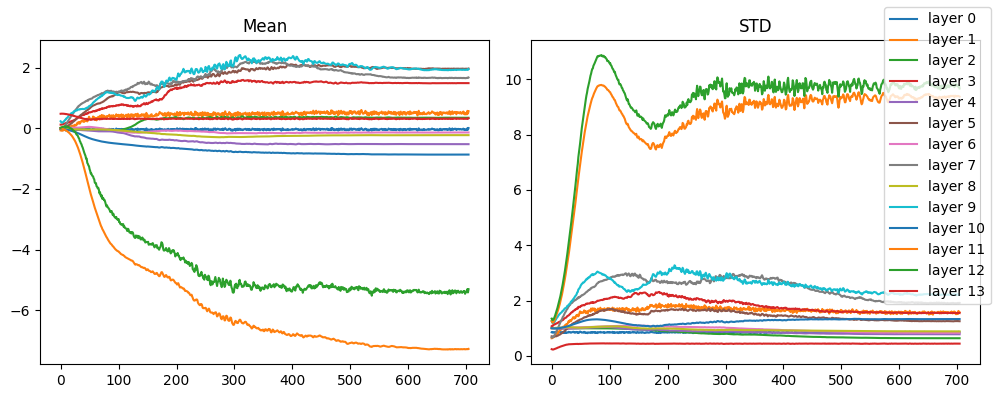
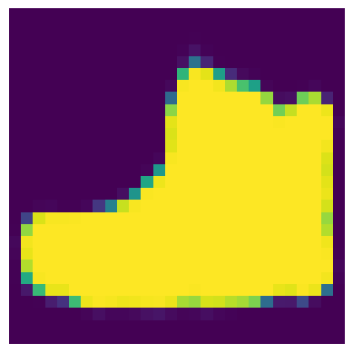
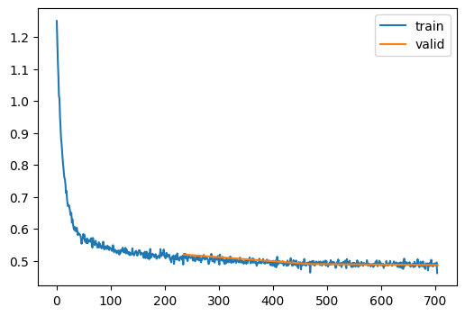
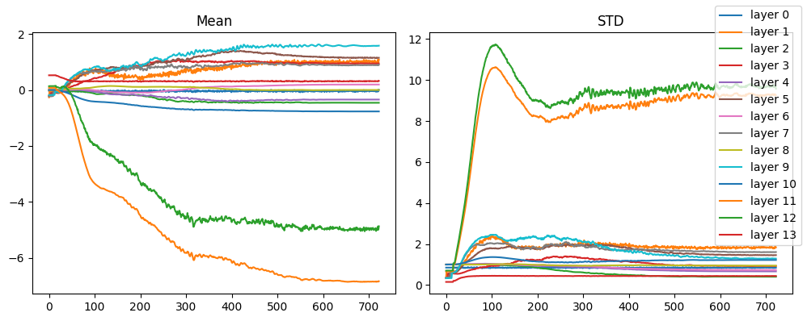
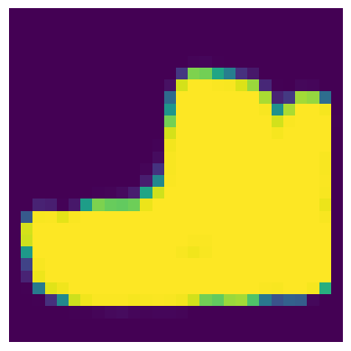

class JReLU(nn.Module):
def __init__(self, a=0.1, b=0.4):
"""Generalized ReLU activation function with bias and leaky slope."""
super().__init__()
self.a = a
self.b = b
def forward(self, x):
return F.leaky_relu(x, self.a) - self.bx = torch.linspace(-10, 10, 100)
plt.plot(x, JReLU(a=0.1, b=0.4)(x));
x = torch.randn(1, 1, 28, 28)
jrelu = JReLU(0.1)
plt.hist(jrelu(x).view(-1));
LEAK = 0.1
class Conv(nn.Module):
def __init__(self, c_in, c_out, ks=3, act=JReLU(LEAK)):
super().__init__()
self.conv = nn.Conv2d(c_in, c_out, stride=2, kernel_size=ks, padding=ks//2)
self.act = act
def forward(self, x):
x = self.conv(x)
if self.act:
x = self.act(x)
return x
def forward(self, x):
x = self.conv(x)
if self.act:
x = self.act(x)
return x
class Deconv(nn.Module):
def __init__(self, c_in, c_out, ks=3, act=JReLU(LEAK)):
super().__init__()
self.upsample = nn.UpsamplingNearest2d(scale_factor=2)
self.conv = nn.Conv2d(c_in, c_out, stride=1, kernel_size=ks, padding=ks // 2)
self.act = act
def forward(self, x):
x = self.upsample(x)
x = self.conv(x)
if self.act:
x = self.act(x)
return xdef apply_leaky_weights(m, neg_slope=LEAK):
if isinstance(m, nn.Conv2d):
nn.init.kaiming_normal_(m.weight, a=neg_slope)
if m.bias is not None:
nn.init.zeros_(m.bias)
class Autoencoder(nn.Module):
def __init__(self):
super().__init__()
self.encoder = nn.ModuleList([
nn.ZeroPad2d(padding=2), # 32x32
Conv(1, 2, ks=5), # 16x16
nn.BatchNorm2d(2),
Conv(2, 4), # 8x8
nn.BatchNorm2d(4),
Conv(4, 8), # 4x4
nn.BatchNorm2d(8),
])
self.decoder = nn.ModuleList([
Deconv(8, 4), # 8x8
nn.BatchNorm2d(4),
Deconv(4, 2), # 16x16
nn.BatchNorm2d(2),
Deconv(2, 1, act=None), # 32x32
nn.BatchNorm2d(1),
nn.ZeroPad2d(padding=-2), # 28x28
nn.Sigmoid(),
])
def forward(self, x):
for layer in self.encoder:
x = layer(x)
for layer in self.decoder:
x = layer(x)
return x
def get_autoencoder(initialize=True):
ae = Autoencoder()
if initialize:
ae.apply(apply_leaky_weights)
return ae
model = get_autoencoder()
modelAutoencoder(
(encoder): ModuleList(
(0): ZeroPad2d((2, 2, 2, 2))
(1): Conv(
(conv): Conv2d(1, 2, kernel_size=(5, 5), stride=(2, 2), padding=(2, 2))
(act): JReLU()
)
(2): BatchNorm2d(2, eps=1e-05, momentum=0.1, affine=True, track_running_stats=True)
(3): Conv(
(conv): Conv2d(2, 4, kernel_size=(3, 3), stride=(2, 2), padding=(1, 1))
(act): JReLU()
)
(4): BatchNorm2d(4, eps=1e-05, momentum=0.1, affine=True, track_running_stats=True)
(5): Conv(
(conv): Conv2d(4, 8, kernel_size=(3, 3), stride=(2, 2), padding=(1, 1))
(act): JReLU()
)
(6): BatchNorm2d(8, eps=1e-05, momentum=0.1, affine=True, track_running_stats=True)
)
(decoder): ModuleList(
(0): Deconv(
(upsample): UpsamplingNearest2d(scale_factor=2.0, mode='nearest')
(conv): Conv2d(8, 4, kernel_size=(3, 3), stride=(1, 1), padding=(1, 1))
(act): JReLU()
)
(1): BatchNorm2d(4, eps=1e-05, momentum=0.1, affine=True, track_running_stats=True)
(2): Deconv(
(upsample): UpsamplingNearest2d(scale_factor=2.0, mode='nearest')
(conv): Conv2d(4, 2, kernel_size=(3, 3), stride=(1, 1), padding=(1, 1))
(act): JReLU()
)
(3): BatchNorm2d(2, eps=1e-05, momentum=0.1, affine=True, track_running_stats=True)
(4): Deconv(
(upsample): UpsamplingNearest2d(scale_factor=2.0, mode='nearest')
(conv): Conv2d(2, 1, kernel_size=(3, 3), stride=(1, 1), padding=(1, 1))
)
(5): ZeroPad2d((-2, -2, -2, -2))
(6): Sigmoid()
)
)dls = fashion_mnist(256)
xb, _ = dls.peek()
xb.shape, model(xb).shape(torch.Size([256, 1, 28, 28]), torch.Size([256, 1, 28, 28]))class AutoencoderLearner(TrainLearner):
def get_loss(self):
xb, _ = self.batch
self.loss = F.mse_loss(self.preds, xb)
def train(model, lr, n_epochs=3, cbs=tuple()):
"""Train a Fashion MNIST model"""
stats = StoreModuleStatsCB(mods=[*model.encoder, *model.decoder])
cbs_ = [
MetricsCB(),
DeviceCB(),
ProgressCB(plot=True),
stats,
]
if cbs:
cbs_.extend(cbs)
AutoencoderLearner(
model,
dls,
F.mse_loss,
lr=lr,
cbs=cbs_,
opt_func=torch.optim.AdamW,
).fit(n_epochs)
return statsmodel = get_autoencoder()
def train_1cycle(model, cbs=[]):
n_epochs = 3
lr = 0.1
T_max = len(dls["train"]) * n_epochs
scheduler = BatchSchedulerCB(OneCycleLR, max_lr=lr, total_steps=T_max)
return train(model, lr, n_epochs, cbs=[*cbs, scheduler])
stats = train_1cycle(model)| loss | epoch | train |
|---|---|---|
| 0.578 | 0 | train |
| 0.502 | 0 | eval |
| 0.495 | 1 | train |
| 0.489 | 1 | eval |
| 0.488 | 2 | train |
| 0.485 | 2 | eval |

stats.mean_std_plot()
out = model(xb.to("cuda")).squeeze()
show_image(out[0].cpu())<Axes: >
class AELSUV(LSUVHook):
def normalize(self):
self.m.bias -= self.mean
self.m.weight.data /= self.stdLSUVInitialization?Init signature:
LSUVInitialization(
mods=None,
mod_filter=<function noop at 0x7f9cb6819b20>,
on_train=True,
on_valid=False,
hook_cls=<class 'slowai.initializations.LSUVHook'>,
)
Docstring: Layer wise sequential unit variance initialization
File: ~/Desktop/SlowAI/nbs/slowai/initializations.py
Type: type
Subclasses: model = get_autoencoder(initialize=False)
convs = [m for m in model.modules() if isinstance(m, nn.Conv2d)]
stats = train_1cycle(model, cbs=[LSUVInitialization(mods=convs, hook_cls=AELSUV)])Layer 0 normalized after 2 batches (-0.00, 1.00)
Layer 1 normalized after 2 batches (0.00, 1.00)
Layer 2 normalized after 2 batches (-0.00, 1.00)
Layer 3 normalized after 2 batches (0.00, 1.00)
Layer 4 normalized after 2 batches (0.00, 1.00)
Layer 5 normalized after 2 batches (-0.00, 1.00)| loss | epoch | train |
|---|---|---|
| 0.570 | 0 | train |
| 0.519 | 0 | eval |
| 0.499 | 1 | train |
| 0.489 | 1 | eval |
| 0.489 | 2 | train |
| 0.487 | 2 | eval |

stats.mean_std_plot()
out = model(xb.to("cuda")).squeeze()
show_image(out[0].cpu())<Axes: >